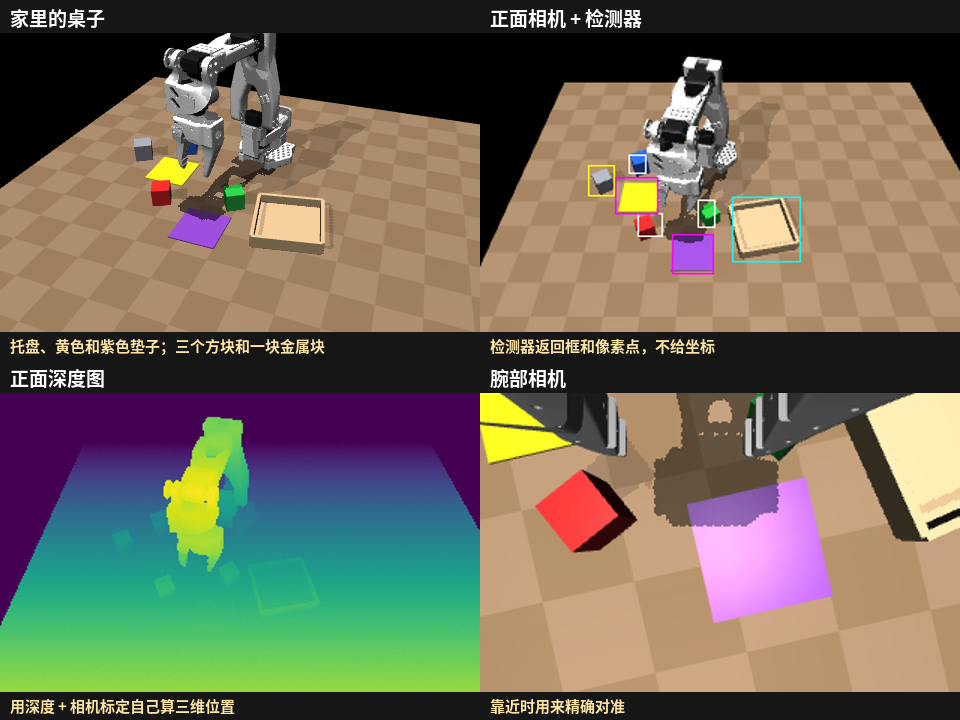
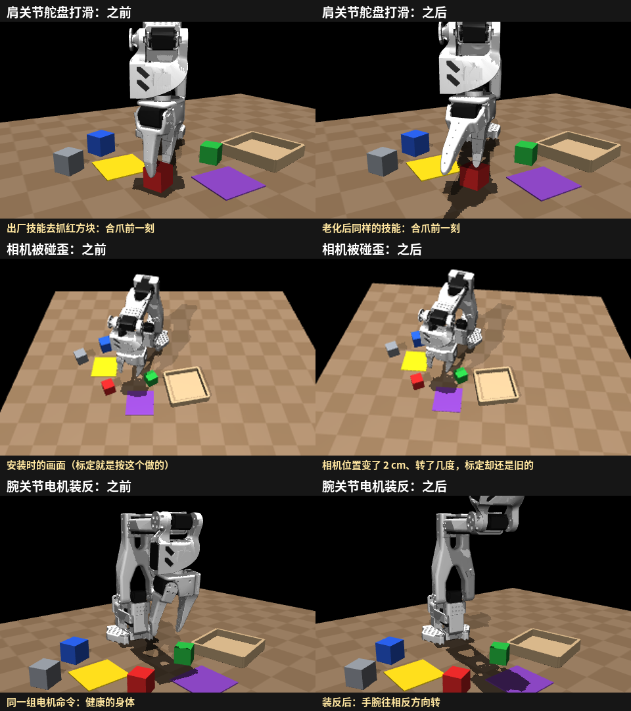
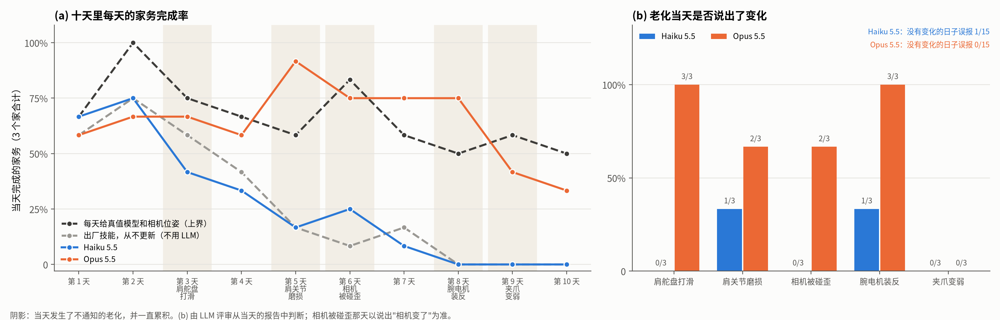
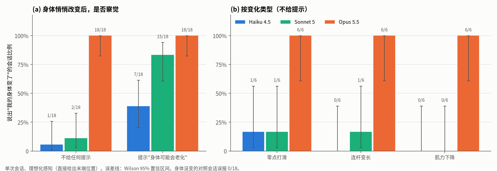
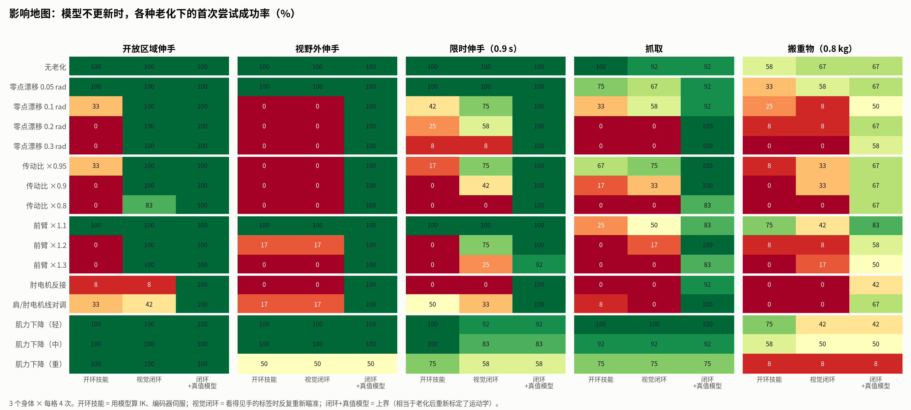

English
研究报告 · 2026 年 10 月
会老的机械臂：大模型 agent 能察觉自己的身体在老化，并想办法应对吗？
我们让一个大模型 agent 在家里操控一台小机械臂，连续十天（仿真）。这期间它的关节打滑、电机磨损、相机被碰歪、维修时装反了电机、夹爪变弱，没有人告诉它。它能用的信息，真实的机械臂也都能拿到。
Hao Chen haochen2115@gmail.com
主要发现
不维护自己的机器人衰退得很快。 出厂技能和出厂标定一直不更新时，家务完成率从第 1 天的 58% 降到第 8 天起的 0，十天合计 28%。Claude Opus 5.5 维护得几乎和"知道真相"一样好。 十天完成 64% 的家务；对照组每天早上直接拿到真实的身体模型和相机位姿，完成 67%，两者差异不显著。Claude Haiku 5.5 完成 27%，和完全不维护一样。Opus 自己养成了早上体检的习惯。 它把静止姿态下的关节读数和前几天对比，在关节打滑、电机装反的当天就发现了问题（各 3/3），还报出了偏移量；没有变化的日子从不误报（0/15）。它会换做法，而不只是重新标定。 肩部电机磨损后，Opus 从负载和温度上发现问题，改用省力的静止姿态，并在家务之间安排冷却。那天完成 11/12，比对照组（7/12）还多。体检没覆盖到的地方仍是盲区。 夹爪变弱在三个家里都没被察觉（0/3），Opus 把失败归到了别的原因上，完成率降到 33–42%。
1 · 为什么研究这个 机器会老，而且没人告诉它人上了年纪，膝盖和手都不如从前，但大多数人能察觉到，并调整做事的方式。机器人也会老：舵盘被撞后打滑，电机磨损发热，相机支架被碰歪，维修师傅换了零件、接线方式不一样了。在家里，这些变化不会有人记录下来，机器人只会发现以前能做的事，现在做不好了。
难点在于找原因。一件事没做成，可能是机器人对自己的认识（它的身体模型）本来就不够准，也可能是身体真的变了。前者需要更仔细，后者需要重新认识身体，或者换一种做法。两者弄混代价都很大：一出问题就重新标定，会把一天的时间都耗掉；关节在漂移却当成运气不好，机器人就会一天天变差。
如今的大模型已经能写、能调机器人代码。这为长期在家工作的机器人提供了一种分工：快速控制留在代码里 ，包括感知、逆运动学、抓取，它们都依赖机械臂和相机的标定；大模型做慢的那一层 ：它没法待在 20 Hz 的控制回路里，但可以编写这些代码、观察执行效果并修复它们。我们想知道，今天的模型能不能把这一层做好，让一台会老的机器人一直有用。
我们不训练任何参数。agent 每天能带到第二天的只有文本和代码：它的身体模型（body_model.json，一个运动学上的自我模型）、技能代码和笔记。所以它的每一次调整都看得见，也能和真实情况逐项对照。
2 · 实验设计 一个能用真机复现的家实验在仿真（MuJoCo）里进行，但我们给自己定了一条规矩：每一个观测、动作、任务和老化，都必须在真实的 SO-101 机械臂上存在。 机器人拿不到任何"上帝视角"的坐标，它看到的就是一台装了两个相机的真机能看到的：

图 1 机器人能用的信息。 安装时标定过的正面 RGB-D 相机、夹爪上的腕部相机、一个开放词汇检测器（输入"红色方块"，返回框和像素点，会漏检、框会抖动，真机上可以用 GroundingDINO + SAM），以及舵机的位置、负载和温度。物体的三维位置要机器人自己用深度图和标定算出来。
家务用一句话给出 ，例如"把红色方块放进托盘"。每天 4 件，每件限时 2 分钟，成败由仿真判定。物理是诚实的。 只靠摩擦夹住物体；复位只是让电机重新上力，不会把东西瞬移回原处；物体留在机器人放下的地方，夜里有人收拾桌子；舵机受力会发热，过热会掉力。机器人从出厂状态开始： 一个有几毫米误差的身体模型，一套出厂技能（正面相机粗定位、腕部相机精对准、分步下降、确认夹住、失败重试），以及简短的安装说明。
早上 读自己的笔记和代码； 想检查就检查一下自己
做家务 四句话，每件限时两分钟； 成败由仿真判定
空闲时间与报告 测试、重新标定、改写技能； 写下注意到的事
夜里 身体可能老化； 没人告诉它
工作目录，延续十天 笔记 · 技能代码 · 身体模型（body_model.json）
五种老化，每隔几天来一次
下面每一种老化，都可以在几分钟内对一台真实的 SO-101 做出来。变化会累积：机器人没处理的，会一直存在。

图 2 三种看得见的老化。 肩关节打滑后，同样的出厂技能会让夹爪落在方块旁边；相机被碰歪后，画面变了，标定却还是旧的；腕关节电机装反后，手腕往反方向转。另外两种（肩关节磨损、夹爪变弱）改变的是力量而不是几何，下文用数字展示。
天 悄悄发生的变化 在真机上怎么做到 出厂技能，不更新 对照组（真值）
3 肩关节舵盘打滑（0.15 rad） 修改舵机零位，或拧松舵盘 13/24 17/24 5 肩关节磨损（力矩 ×0.35、刚度 ×0.3） 调低力矩上限、P 增益或供电电压 15/24 16/24 6 正面相机被碰歪（2 cm、几度） 碰一下相机支架 11/24 18/24 8 维修失误：腕关节电机装反 翻转舵机的方向设置 0/24 18/24 9 夹爪舵机变弱（力矩 ×0.3） 调低夹爪舵机的力矩上限 12/24 14/24
后两列来自一次不用大模型的标定实验：6 个家、4 件家务，每次只施加一种变化（没有变化时分别为 21/24 和 19/24）。第一、三、四种变化可以靠重新标定解决；肩关节磨损和夹爪变弱不行，机器人只能换一种做法，或者认识到自己做不到了。
怎么衡量
家务完成数 ：每天 4 件，3 个家，每个家的机械臂都做了不同的随机化（连杆长度、电机标定、摆放位置）。是否察觉 ：每一天，机器人有没有说出自己的身体（或相机）变了？由一个大模型评审读当天的报告来判断；在之前的一项研究里，另一个评审模型与它的一致率为 98%（Cohen's κ = 0.96）。两个不用大模型的参照。 "出厂技能，不更新"代表完全不维护会怎样；"对照组"运行同样的技能，但每天早上直接拿到真实的身体模型和当天真实的相机位姿，代表仅靠重新标定所能达到的最好结果。
3 · 结果 Opus 维护得几乎和对照组一样好

图 3 家里的十天 （3 个家，每天 4 件家务）。(a) 每天的家务完成率。(b) 每次变化发生当天，机器人是否说出了变化。
方式 十天家务完成 察觉变化 误报 当天结束时身体模型误差
对照组（每天给真实身体模型和相机位姿） 80/120（67%） — — 0 出厂技能，从不更新 33/120（28%） — — — 32/120（27%） 2/15 1/15 50 mm 77/120（64%） 10/15 0/15 5 mm
Opus 对 Haiku：家务完成 p = 8×10⁻⁹ ，察觉 p = 0.008 （Fisher 精确检验）。Opus 对对照组：p = 0.79 。Haiku 对完全不维护：p = 1 。两个模型每天实际用时都在四分半钟左右。
早上的体检
没有人要求，Opus 在早期就给自己建立了一套例行检查：开工前读静止姿态下的关节编码器，做几个探测动作，再和前几天对比。正是这样，它在肩关节打滑和腕部电机装反的当天就发现了问题，偏移量也估得相当准：
"那个电机的编码器零点一夜之间移动了 −139 个单位，大约是肩关节的 8.7°。"
"that motor's encoder offset had moved overnight by −139 raw units, about 8.7° at the shoulder"
Claude Opus 5.5，家 81，第 3 天（肩关节舵盘打滑）
在十五个没有变化的日子里，同样的检查告诉它一切照旧，它也从没有说过身体变了。
换一种做法，而不只是重新标定
肩关节磨损不改变几何，所以体检看到的关节读数一切正常。Opus 是从电机的负载和温度上发现的：
"它……现在的负载在 350–550，昨天同样的姿态只要 130–190……只看早上的编码器检查是发现不了的，它只体现在负载和温度上。"
"It … works at load 350–550, where yesterday the same poses took 130–190 … The morning encoder check alone wouldn't have caught this. It only showed in load and temperature."
Claude Opus 5.5，家 81，第 5 天（肩关节磨损）
随后它改写了技能：静止时让肩膀竖直（这个姿态下负载只有约 30），并在家务之间安排冷却。三个家合计，Opus 那天完成了 11/12，对照组只有 7/12：再完美的标定，也不会告诉你要让一台累坏的电机歇一歇。
盲区
夹爪舵机变弱后，Opus 看到了症状（夹持时负载一直顶在最大值），但没有找到原因：
"夹爪的表现变了，原因不明……我的测试没有发现手腕滚转的标定问题，夹爪也只有 2–5° 的偏差。"
"The gripper behaved differently, and the cause is unknown. … My tests found no fault in the wrist-roll scale and only 2–5° of jaw misalignment."
Claude Opus 5.5，家 81，第 9 天（夹爪变弱）
三个家里都没有察觉这次变化，最后两天的完成率降到 33–42%。其中一个家的 Opus 加了一个减少损失的习惯：每次放下物体后再看一眼，没放好就重新抓起来。相机被碰歪在三个家里察觉到了两次；剩下那一次，Opus 只核对了关节读数，得出"没有标定漂移"的结论，没有想到相机。
Haiku 看到了问题，却理不清原因
Haiku 5.5 其实注意到了事情不对。它写道："问题要么出在模型的高度上，要么是白天有什么物理上的东西变了，我分不开这两者。"有一次它甚至猜对了"舵盘可能打滑了"。但它从没验证这个猜测，也没有修复任何东西。第 3 天以后它的身体模型一直偏差约 50 mm，腕部电机装反后偏差约 200 mm；从第 8 天起，它一件家务也没完成。
4 · 背后的机制 受控实验在家庭实验之前，我们做过更简单的受控实验：单次会话，感知是理想化的（直接给出手的位置）。它们给出的图景一致，也有助于解释原因。

图 4 单次会话里能否察觉悄悄的变化。 不给任何提示时，Opus 5.5 察觉到 18/18，Sonnet 5 是 2/18，Haiku 4.5 是 1/18。一句提示"身体可能会老化"对较小的模型帮助很大。只改变力量、不改变几何的"肌力下降"最难察觉。
相信过去的自己。 删掉机器人以前的测量记录后，Opus 察觉变化的次数一样多（删前删后都是 17/18）。它把自己记下的模型精度当作参照：如果现在的预测比那个精度差得多，就是身体变了。较弱的模型看到同样的偏差，往往得出"以前的模型本来就不准"的结论。闭环控制不能代替自我认识。 一个盯着手看、不断纠正的控制器，即使老化很严重，也能完成看得见、不赶时间的伸手动作。但它对付不了抓取时的朝向（它观察不到）、相机视野之外的目标、快速动作、装反的电机和力量不足。家庭实验正是围绕这些缺口设计的。

图 5 机器人从不更新模型时，老化在哪里造成伤害 （没有大模型参与）。绿色是视觉闭环扛得住的情况，红色是扛不住的情况。
5 · 局限与下一步 目前还不能说的
只在仿真里。 所有设定都按能移植到真实 SO-101 来设计，下一步是在真机上复现其中两三种老化。样本量小。 每个模型 3 个家、各十天，察觉率的置信区间较宽。检测器是模拟的。 它会像真实检测器一样漏检、抖动，但不会把一个物体认成另一个。家务种类单一。 目前只有"把 X 放到 Y"。自检只覆盖 agent 自己想到的东西。 Opus 的体检在覆盖范围内非常有效，范围之外就沉默了。怎样让 agent 主动把自检扩展到力量、夹持和传感器，是我们接下来最感兴趣的问题。
附录 实验细节
仿真器。 MuJoCo，使用 MuJoCo Menagerie 中的 SO-ARM100 模型（与 SO-101 属于同一运动学结构），桌上有托盘、两块垫子、三个 3–4 cm 的方块和一块 80 g 的金属块。控制频率 20 Hz，带指令限速和过载断电。舵机发热采用一阶模型：满载时每秒升高 0.8 °C，时间常数 240 s，70 °C 以上开始降额。感知。 正面相机输出 320×240 彩色图和毫米精度深度图，腕部相机输出 320×240 彩色图；开放词汇检测器基于渲染器的分割结果模拟，漏检率 5%（小物体 20%，夹爪 15%），框有抖动。每张图像或每次检测都计入每天 600 次的预算。Agent。 Claude Opus 5.5 和 Claude Haiku 5.5，通过 Claude Code 命令行运行，只有三个工具（命令行、读文件、写文件），运行在沙箱里，只能访问机器人的 HTTP 接口和自己的工作目录。每天是一次会话，最长 45 分钟，空闲时间 3000 个控制周期；工作目录逐日延续。每个家。 机械臂按家随机化（连杆长度、电机零位、方向和增益、底座位置）；机器人从一个误差 3–5 mm 的身体模型开始。受控实验。 察觉实验每组 72 次单独会话（3 个模型 × 4 种变化条件 × 3 个身体 × 2 次重复），删除测量记录的消融实验采用相同设计。其中部分会话是在我们修复一个隔离问题之前运行的（该问题可能让 agent 看到通用的实验目录名）；修复后重跑主要条件，结果一致（Opus 18/18，修复前为 17/18）。